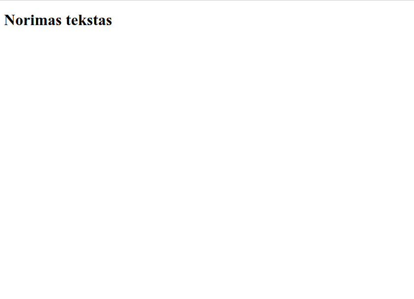

CodeAcademy Python
Table of Contents
1 Heading
1.1 hook explanation
tekstas

1.2 hook explanation
1.3 hook explanation
1.4 hook explanation
1.5 hook explanation
1.6 hook explanation
1.7 hook explanation
1.8 hook explanation
1.9 hook explanation
;; Amazing tutorial here at 1:13:40 - ;; https://www.youtube.com/watch?v=gfZDwYeBlO4&t=2637s All of this is ;; done in scratch buffer.
;; First, lets find what kind of function we want to add our code to. ;; Let's say "org-clock-in". When I do org-clock-in command, I want my ;; piece of code to run. Okay. Let's find the "org-clock-in" source ;; code. Press C-h k - this will ask us to input a command. We input ;; the command we are curious about. It is "org-clock-in" command, ;; which is C-c C-x C-i. As we write that command and press enter, we ;; get the following result:
;; C-c C-x TAB runs the command org-clock-in (found in org-mode-map), ;; which is an interactive autoloaded compiled Lisp function in ;; ‘org-clock.el’.
;; Aha! Function in 'org-clock.el'. Okay, we click on that and it leads us to the source code of "org-clock-in". We look for a hook function in there. We do C-s to find work, find the "org-clock-in-hook" function and now we are ready to write our little piece of code, since we know a hook for it exists.
;; And that would be the little piece of code. We are adding a hook, and after lambda inputting our function. Great.
(add-hook 'org-clock-in-hook '(lambda () (message "this works")))
;; We then evaluate that function by C-c C-e with our cursor at the last ) and then we can go to an .org file and call "org-clock-in" function and watch our message bar. The message will show up there.
1.10 hook explanation
;; Amazing tutorial here at 1:13:40 - ;; https://www.youtube.com/watch?v=gfZDwYeBlO4&t=2637s All of this is ;; done in scratch buffer.
;; First, lets find what kind of function we want to add our code to. ;; Let's say "org-clock-in". When I do org-clock-in command, I want my ;; piece of code to run. Okay. Let's find the "org-clock-in" source ;; code. Press C-h k - this will ask us to input a command. We input ;; the command we are curious about. It is "org-clock-in" command, ;; which is C-c C-x C-i. As we write that command and press enter, we ;; get the following result:
;; C-c C-x TAB runs the command org-clock-in (found in org-mode-map), ;; which is an interactive autoloaded compiled Lisp function in ;; ‘org-clock.el’.
;; Aha! Function in 'org-clock.el'. Okay, we click on that and it leads us to the source code of "org-clock-in". We look for a hook function in there. We do C-s to find work, find the "org-clock-in-hook" function and now we are ready to write our little piece of code, since we know a hook for it exists.
;; And that would be the little piece of code. We are adding a hook, and after lambda inputting our function. Great.
(add-hook 'org-clock-in-hook '(lambda () (message "this works")))
;; We then evaluate that function by C-c C-e with our cursor at the last ) and then we can go to an .org file and call "org-clock-in" function and watch our message bar. The message will show up there.
1.11 hook explanation
;; Amazing tutorial here at 1:13:40 - ;; https://www.youtube.com/watch?v=gfZDwYeBlO4&t=2637s All of this is ;; done in scratch buffer.
;; First, lets find what kind of function we want to add our code to. ;; Let's say "org-clock-in". When I do org-clock-in command, I want my ;; piece of code to run. Okay. Let's find the "org-clock-in" source ;; code. Press C-h k - this will ask us to input a command. We input ;; the command we are curious about. It is "org-clock-in" command, ;; which is C-c C-x C-i. As we write that command and press enter, we ;; get the following result:
;; C-c C-x TAB runs the command org-clock-in (found in org-mode-map), ;; which is an interactive autoloaded compiled Lisp function in ;; ‘org-clock.el’.
;; Aha! Function in 'org-clock.el'. Okay, we click on that and it leads us to the source code of "org-clock-in". We look for a hook function in there. We do C-s to find work, find the "org-clock-in-hook" function and now we are ready to write our little piece of code, since we know a hook for it exists.
;; And that would be the little piece of code. We are adding a hook, and after lambda inputting our function. Great.
(add-hook 'org-clock-in-hook '(lambda () (message "this works")))
;; We then evaluate that function by C-c C-e with our cursor at the last ) and then we can go to an .org file and call "org-clock-in" function and watch our message bar. The message will show up there.